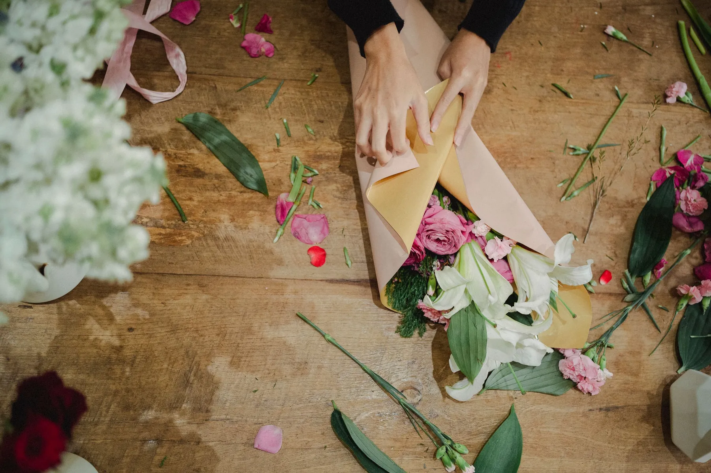
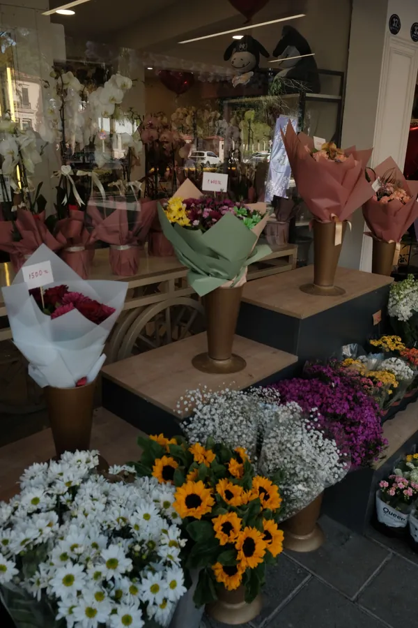

Çiçekçi · Denizli
Fotoğraf temsilîdir
Her buket elle sarılır.
Buket, aranjman, orkide, araç süsleme ve çelenk. Denizli'de sevdiklerinize çiçek göndermek için arayın ya da WhatsApp'tan yazın.
Çiçekler
Ne göndermek istersiniz?
Başlıklar Instagram profilinizdeki öne çıkanlardan alındı. Yayında her başlığın altında kendi fotoğraflarınız durur.
- Gül buketleriörnek: kırmızı, pembe, beyaz
- Mevsim buketleriörnek: mevsimin çiçekleriyle
- Vazo ve kutu aranjmanörnek: masa ve hediye için
- Orkide ve saksı çiçekleriörnek: uzun ömürlü hediye
- Sevgililer Günüözel gün hazırlıkları
- Çikolataçiçeğin yanına, örnek

Özel işler

Araç süslemedüğün, nişan, karşılama (örnek) Açılış çiçekleriyeni iş yeri için (örnek) 
Orkideuzun ömürlü hediye (örnek)
Bir günün çiçeği.
Açılış, düğün, taziye ve tebrik için hazırlanan işler. Çelenk ve taziye çiçeklerinde ölçüyü ve yazıyı sizinle birlikte, sakin bir dille netleştiririz.

İletişim
Yazın, hazırlayalım.
Ne zaman, kime, hangi çiçek olsun; mesajınız yeter.
Adalet Mh. Tuna Cd. No:33, Denizli · @senacicekcilik20